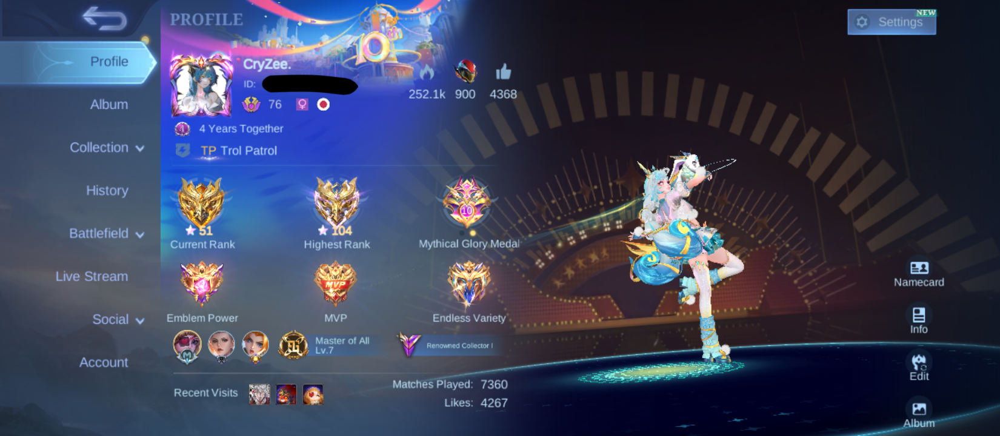

My Recreational Activities & Interests
Coding & Building Projects
Experimenting with C# logic, solving CodeChum challenges, and building web pages from scratch.
Online Games & Chess
My main go-to game is Mobile Legends: Bang Bang—I keep my phone focused on one game at a time, though I'd definitely explore more titles on a higher-spec device. I also know how to play chess; I don't play as much lately, but I'm always up for a match if someone invites me.
Anime & Music
I love watching anime—it is genuinely one of the biggest things that shaped who I am today. As for music, I can't pin down just one genre because I enjoy listening to a little bit of everything depending on my mood.
Hobby Snapshot

Grinding ranks and unwinding with Mobile Legends: Bang Bang.